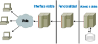

Cuando programas una aplicación, utilizas un lenguaje de programación. Por ejemplo, utilizas el lenguaje Java para crear aplicaciones que se ejecuten en distintos sistemas operativos. Al programar cada aplicación utilizas ciertas herramientas como un entorno de desarrollo o librerías de código. Además, una vez acabado su desarrollo, esa aplicación necesitará ciertos componentes para su ejecución, como por ejemplo una máquina virtual de Java.
En este bloque vas a aprender las distintas tecnologías que se pueden utilizar para programar aplicaciones que se ejecuten en un servidor web, y cómo se relacionan unas con otras. Verás las ventajas e inconvenientes de utilizar cada una, y qué lenguajes de programación deberás aprender para utilizarlas.
Los componentes principales con los que debes contar para ejecutar aplicaciones web en un servidor son los siguientes:
- Un servidor web para recibir las peticiones de los clientes web (normalmente navegadores) y enviarles la página que solicitan (una vez generada puesto que hablamos de páginas web dinámicas). El servidor web debe conocer el procedimiento a seguir para generar la página web: qué módulo se encargará de la ejecución del código y cómo se debe comunicar con él.
- El módulo encargado de ejecutar el código o programa y generar la página web resultante. Este módulo debe integrarse de alguna forma con el servidor web, y dependerá del lenguaje y tecnología que utilicemos para programar la aplicación web.
- Una aplicación de base de datos, que normalmente también será un servidor. Este módulo no es estrictamente necesario pero en la práctica se utiliza en todas las aplicaciones web que utilizan grandes cantidades de datos para almacenarlos.
- El lenguaje de programación que utilizarás para desarrollar las aplicaciones.
Además de los componentes a utilizar, también es importante decidir cómo vas a organizar el código de la aplicación. Muchas de las arquitecturas que se usan en la programación de aplicaciones web te ayudan a estructurar el código de las aplicaciones en capas o niveles.
El motivo de dividir en capas el diseño de una aplicación es que se puedan separar las funciones lógicas de la misma, de tal forma que sea posible ejecutar cada una en un servidor distinto (en caso de que sea necesario).

En una aplicación puedes distinguir, de forma general, funciones de presentación (se encarga de dar formato a los datos para presentárselo al usuario final), lógica (utiliza los datos para ejecutar un proceso y obtener un resultado), persistencia (que mantiene los datos almacenados de forma organizada) y acceso (que obtiene e introduce datos en el espacio de almacenamiento).
Cada capa puede ocuparse de una o varias de las funciones anteriores. Por ejemplo, en las aplicaciones de 3 capas nos podemos encontrar con:
- Una capa cliente, que es donde programarás todo lo relacionado con el interface de usuario, esto es, la parte visible de la aplicación con la que interactuará el usuario.
- Una capa intermedia donde deberás programar la funcionalidad de tu aplicación.
- Una capa de acceso a datos, que se tendrá que encargar de almacenar la información de la aplicación en una base de datos y recuperarla cuando sea necesario.
{kind=link}